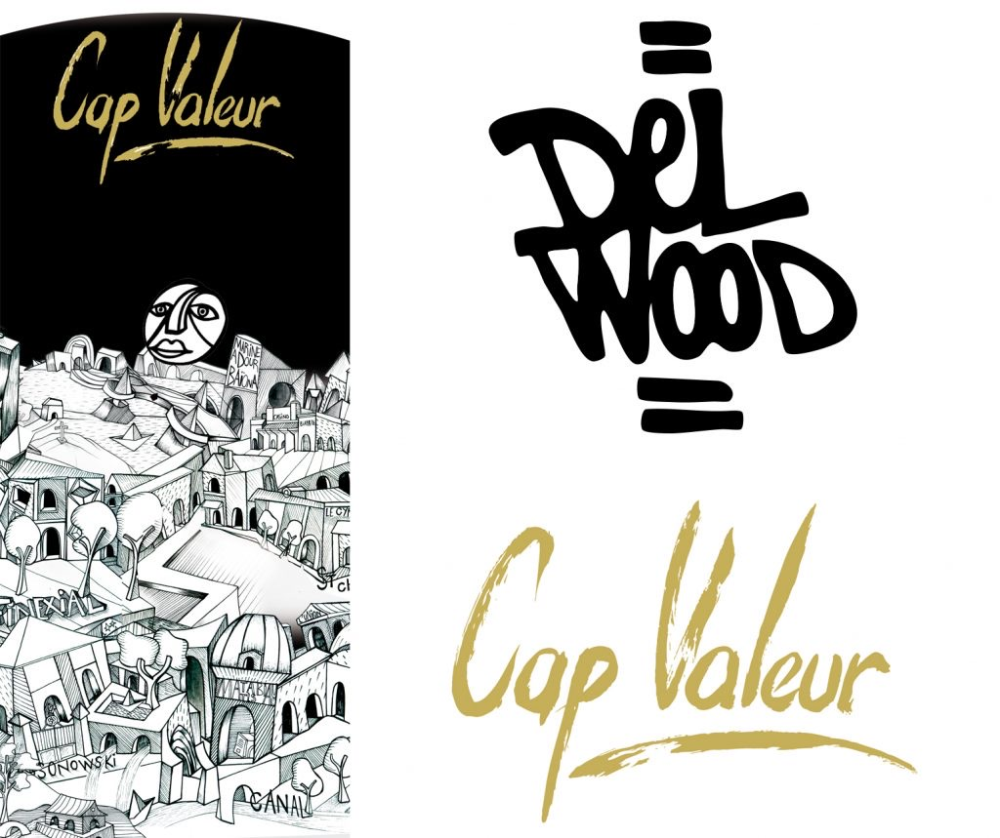
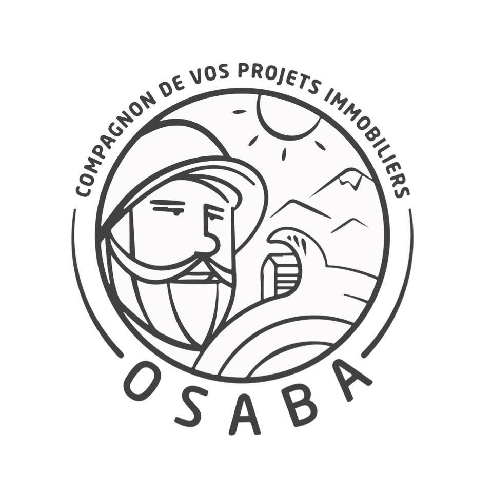
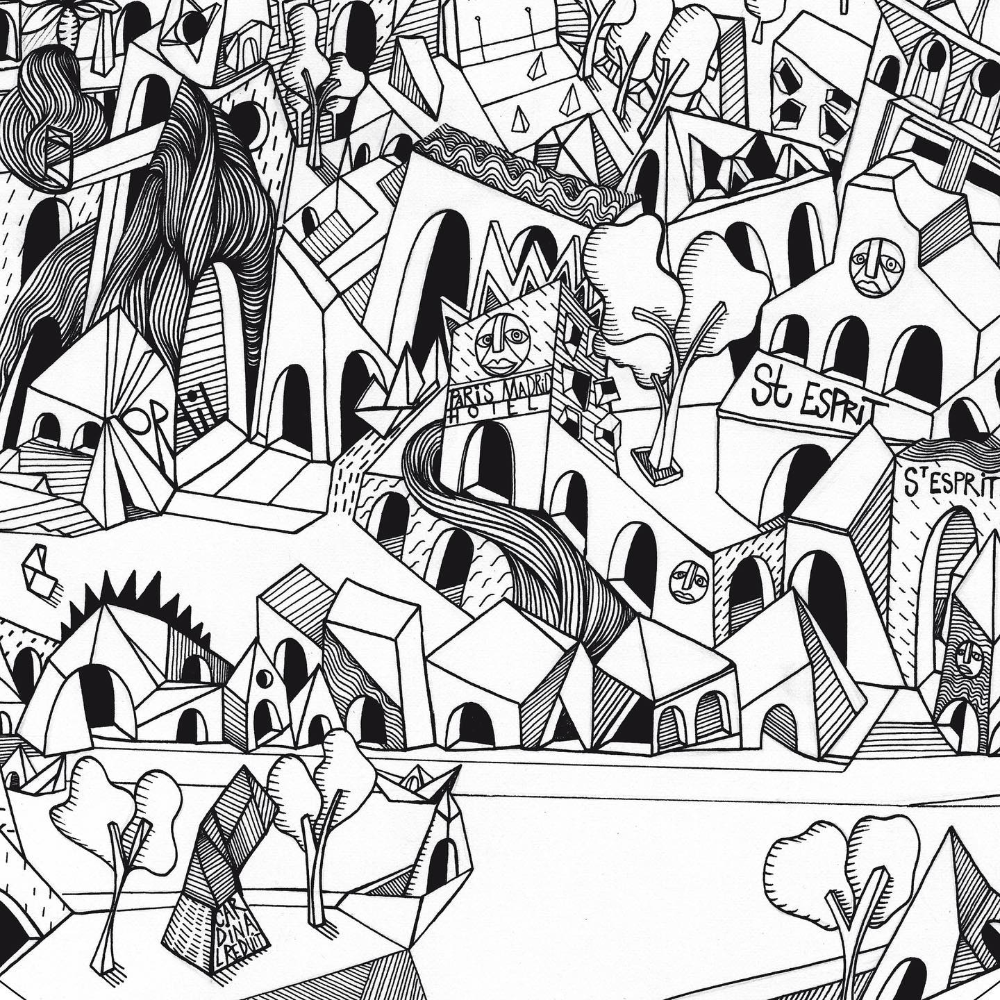

Créer une œuvre qui appartient au lieu.
Delwood conçoit des interventions artistiques sur mesure, pensées dès l'esquisse avec l'architecture, les usages et l'identité du lieu qui les accueille.
Pour qui
La démarche
Chaque projet suit un même principe : l'œuvre se conçoit avec le lieu, jamais après lui.
Comprendre le lieu
Visite, échanges avec les équipes et les architectes, lecture de l'architecture, des usages et de la lumière.
Esquisser
Proposition graphique adaptée au support, à l'échelle et aux contraintes techniques du site.
Réaliser
Exécution sur site ou en atelier, selon la nature du support : mur, façade, volume, objet industriel.
Quelques repères

Environnement industriel
Optima Aero
Une intervention artistique sur des éléments de fuselages d'EC135, réalisée en environnement industriel et professionnel.
Intérieur haut de gamme
La Maison du Marquis
Une œuvre intégrée à un intérieur d'exception, pensée pour habiter l'espace autant que le mur qui la porte.


Art en entreprise · Bidart · 2021
Cap Valeur
Le Groupe Cap Valeur et Delwood imaginent ensemble une œuvre pour réinterpréter l'art en entreprise et raconter l'histoire du groupe, dévoilée lors d'un vernissage privé dans ses locaux, à Bidart, en octobre 2021.
Voir la vidéoCréation de trophées · Anglet · 2023
Osaba × Delwood
Pour le tournoi traditionnel du trinquet Orok Bat, à Anglet, Osaba a choisi d'offrir aux vainqueurs des œuvres uniques plutôt que des coupes : des trophées réalisés par Delwood. L'art au service du sport, par un acteur local engagé.

Votre chemin de vie.
Avez-vous déjà pensé à une œuvre personnalisée, construite sur les contours de votre vie ?
Delwood redessine à l'encre les lieux et les étapes d'un parcours en architectures imaginaires, peuplées de masques et de visages. Une pièce unique, qui raconte une vie.
Parler de votre projet